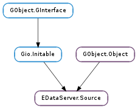

| static | new(dbus_object, main_context) |
| static | new_with_uid(uid, main_context) |
| static | parameter_to_key(param_name) |
| changed() | |
| compare_by_display_name(source2) | |
| dup_display_name() | |
| dup_parent() | |
| dup_uid() | |
| equal(source2) | |
| get_display_name() | |
| get_enabled() | |
| get_extension(extension_name) | |
| get_oauth2_access_token(cancellable, callback, *user_data) | |
| get_oauth2_access_token_finish(result, out_access_token, out_expires_in) | |
| get_oauth2_access_token_sync(cancellable, out_access_token, out_expires_in) | |
| get_parent() | |
| get_remote_creatable() | |
| get_remote_deletable() | |
| get_removable() | |
| get_uid() | |
| get_writable() | |
| has_extension(extension_name) | |
| hash() | |
| mail_signature_load(io_priority, cancellable, callback, *user_data) | |
| mail_signature_load_finish(result, contents, length) | |
| mail_signature_load_sync(contents, length, cancellable) | |
| mail_signature_replace(contents, length, io_priority, cancellable, callback, *user_data) | |
| mail_signature_replace_finish(result) | |
| mail_signature_replace_sync(contents, length, cancellable) | |
| mail_signature_symlink(symlink_target, io_priority, cancellable, callback, *user_data) | |
| mail_signature_symlink_finish(result) | |
| mail_signature_symlink_sync(symlink_target, cancellable) | |
| ref_dbus_object() | |
| ref_main_context() | |
| refresh_add_timeout(context, callback, *user_data) | |
| refresh_force_timeout() | |
| refresh_remove_timeout(refresh_timeout_id) | |
| refresh_remove_timeouts_by_data(user_data) | |
| remote_create(scratch_source, cancellable, callback, *user_data) | |
| remote_create_finish(result) | |
| remote_create_sync(scratch_source, cancellable) | |
| remote_delete(cancellable, callback, *user_data) | |
| remote_delete_finish(result) | |
| remote_delete_sync(cancellable) | |
| remove(cancellable, callback, *user_data) | |
| remove_finish(result) | |
| remove_sync(cancellable) | |
| set_display_name(display_name) | |
| set_enabled(enabled) | |
| set_parent(parent) | |
| to_string(length) | |
| write(cancellable, callback, *user_data) | |
| write_finish(result) | |
| write_sync(cancellable) |
| Name | Type | Flags | Description |
|---|---|---|---|
| display-name | str | r/w | The human-readable name of the data source |
| enabled | bool | r/w | Whether the data source is enabled |
| main-context | GLib.MainContext | r/w/c | The main loop context on which to attach event sources |
| parent | str | r/w | The unique identity of the parent data source |
| remote-creatable | bool | r | Whether the data source can create remote resources |
| remote-deletable | bool | r | Whether the data source can delete remote resources |
| removable | bool | r | Whether the data source is removable |
| uid | str | r/w/c | The unique identity of the data source |
| writable | bool | r | Whether the data source is writable |
| Name | Parameters | Return | Description |
|---|---|---|---|
| changed | The ::changed signal is emitted when a property in source or one of its extension objects changes. A common use for this signal is to notify a #GtkTreeModel containing data collected from EDataServer.Source s that it needs to update a row. |
| Name | Type | Access |
|---|---|---|
| parent | GObject.Object | r |
Bases: GObject.Object, Gio.Initable
Contains only private data that should be read and manipulated using the functions below.
| Parameters: |
|
|---|---|
| Raises: | |
| Returns: | a new EDataServer.Source, or None on error |
| Return type: |
Creates a new EDataServer.Source instance.
The EDataServer.Source ::changed signal will be emitted from main_context if given, or else from the thread-default GLib.MainContext at the time this function is called.
The only time the function should be called outside of EDataServer.SourceRegistry is to create a so-called “scratch” EDataServer.Source for editing in a Properties window or an account setup assistant.
FIXME: Elaborate on scratch sources.
| Parameters: |
|
|---|---|
| Raises: | |
| Returns: | a new scratch EDataServer.Source, or None on error |
| Return type: |
Creates a new “scratch” EDataServer.Source with a predetermined unique identifier.
The EDataServer.Source ::changed signal will be emitted from main_context if given, or else from the thread-default GLib.MainContext at the time this function is called.
| Parameters: | param_name (str) – a GObject.ParamSpec name |
|---|---|
| Return type: | str |
Converts a GObject.ParamSpec name (e.g. “foo-bar” or “foo_bar”) to “CamelCase” for use as a GLib.KeyFile key (e.g. “FooBar”).
This function is made public only to aid in account migration. Applications should not need to use this.
The ::changed signal is emitted when a property in source or one of its extension objects changes. A common use for this signal is to notify a #GtkTreeModel containing data collected from EDataServer.Source s that it needs to update a row.
| Parameters: | source2 (EDataServer.Source) – the second EDataServer.Source |
|---|---|
| Returns: | a negative value if source1 compares before source2, zero if they compare equal, or a positive value if source1 compares after source2 |
| Return type: | int |
Compares two EDataServer.Source instances by their display names. Useful for ordering sources in a user interface.
| Returns: | a newly-allocated copy of EDataServer.Source :display-name |
|---|---|
| Return type: | str |
Thread-safe variation of EDataServer.Source.get_display_name (). Use this function when accessing source from multiple threads.
The returned string should be freed with GLib.free () when no longer needed.
| Returns: | a newly-allocated copy of EDataServer.Source :parent |
|---|---|
| Return type: | str |
Thread-safe variation of EDataServer.Source.get_parent (). Use this function when accessing source from multiple threads.
The returned string should be freed with GLib.free () when no longer needed.
| Returns: | a newly-allocated copy of EDataServer.Source :uid |
|---|---|
| Return type: | str |
Thread-safe variation of EDataServer.Source.get_uid (). Use this function when accessing source from multiple threads.
The returned string should be freed with GLib.free () when no longer needed.
| Parameters: | source2 (EDataServer.Source) – the second EDataServer.Source |
|---|---|
| Returns: | True if source1 and source2 are equal |
| Return type: | bool |
Checks two EDataServer.Source instances for equality. EDataServer.Source instances are equal if their unique identifier strings are equal.
| Returns: | the display name for source |
|---|---|
| Return type: | str |
Returns the display name for source. Use the display name to represent the EDataServer.Source in a user interface.
| Returns: | whether source is enabled |
|---|---|
| Return type: | bool |
Returns True if source is enabled.
An application should try to honor this setting if at all possible, even if it does not provide a way to change the setting through its user interface. Disabled data sources should generally be hidden.
This function does not take into account source ‘s ancestors in the EDataServer.Source hierarchy, each of which have their own enabled state. If any of source ‘s ancestors are disabled, then source itself should be treated as disabled. Use EDataServer.SourceRegistry.check_enabled () to easily check for this.
| Parameters: | extension_name (str) – an extension name |
|---|---|
| Returns: | an instance of some EDataServer.SourceExtension subclass |
| Return type: | EDataServer.SourceExtension |
Returns an instance of some EDataServer.SourceExtension subclass which registered itself under extension_name. If no such instance exists within source, one will be created. It is the caller’s responsibility to know which subclass is being returned.
If you just want to test for the existence of an extension within source without creating it, use EDataServer.Source.has_extension ().
Extension instances are owned by their EDataServer.Source and should not be referenced directly. Instead, reference the EDataServer.Source instance and use this function to fetch the extension instance as needed.
| Parameters: |
|
|---|
Asynchronously obtains the OAuth 2.0 access token for source along with its expiry in seconds from the current time (or 0 if unknown).
When the operation is finished, callback will be called. You can then call EDataServer.Source.get_oauth2_access_token_finish () to get the result of the operation.
| Parameters: |
|
|---|---|
| Raises: | |
| Returns: | |
| Return type: |
Finishes the operation started with EDataServer.Source.get_oauth2_access_token ().
Free the returned access token with GLib.free () when finished with it. If an error occurred, the function will set error and return False.
| Parameters: |
|
|---|---|
| Raises: | |
| Returns: | |
| Return type: |
Obtains the OAuth 2.0 access token for source along with its expiry in seconds from the current time (or 0 if unknown).
Free the returned access token with GLib.free () when finished with it. If an error occurs, the function will set error and return False.
| Returns: | the UID of the parent EDataServer.Source |
|---|---|
| Return type: | str |
Returns the unique identifier string of the parent EDataServer.Source.
| Returns: | whether source can create remote resources |
|---|---|
| Return type: | bool |
Returns whether new resources can be created on a remote server by calling EDataServer.Source.remote_create () on source.
Generally this is only True if source has an EDataServer.SourceCollection extension, which means there is an #ECollectionBackend in the D-Bus service that can handle create requests. If source does not have this capability, calls to EDataServer.Source.remote_create () will fail.
| Returns: | whether source can delete remote resources |
|---|---|
| Return type: | bool |
Returns whether the resource represented by source can be deleted from a remote server by calling EDataServer.Source.remote_delete ().
Generally this is only True if source is a child of an EDataServer.Source which has an EDataServer.SourceCollection extension, which means there is an #ECollectionBackend in the D-Bus service that can handle delete requests. If source does not have this capability, calls to EDataServer.Source.remote_delete () will fail.
| Returns: | whether source is removable |
|---|---|
| Return type: | bool |
Returns whether the D-Bus service will allow source to be removed. If source is not writable, calls to EDataServer.Source.remove () will fail.
| Returns: | the UID for source |
|---|---|
| Return type: | str |
Returns the unique identifier string for source.
| Returns: | whether source is writable |
|---|---|
| Return type: | bool |
Returns whether the D-Bus service will accept changes to source. If source is not writable, calls to EDataServer.Source.write () will fail.
| Parameters: | extension_name (str) – an extension name |
|---|---|
| Returns: | True if source has such an extension, False if not |
| Return type: | bool |
Checks whether source has an EDataServer.SourceExtension with the given name.
| Returns: | a hash value for source. |
|---|---|
| Return type: | int |
Generates a hash value for source. This function is intended for easily hashing an EDataServer.Source to add to a GLib.HashTable or similar data structure.
| Parameters: |
|
|---|
Asynchronously loads a signature from the signature file for source, which is given by EDataServer.SourceMailSignature.get_file ().
If the signature file is executable, it will be executed and its output captured as the email signature content. If the signature file is not executable, the email signature content is read directly from the file.
When the operation is finished, callback will be called. You can then call EDataServer.Source.mail_signature_load_finish () to get the result of the operation.
| Parameters: |
|
|---|---|
| Raises: | |
| Returns: | |
| Return type: |
Finishes an operation started with EDataServer.Source.mail_signature_load (). The signature file contents are placed in contents, and length is set to the size of the contents string. The contents string should be freed with GLib.free () when no longer needed.
| Parameters: |
|
|---|---|
| Raises: | |
| Returns: | |
| Return type: |
Loads a signature from the signature file for source, which is given by EDataServer.SourceMailSignature.get_file (). The signature contents are placed in contents, and length is set to the size of the contents string. The contents string should be freed with GLib.free () when no longer needed.
If the signature file is executable, it will be executed and its output captured as the email signature content. If the signature file is not executable, the email signature content is read directly from the file.
| Parameters: |
|
|---|
Asynchrously replaces the signature file for source with the given contents of length bytes. The signature file for source is given by EDataServer.SourceMailSignature.get_file ().
When the operation is finished, callback will be called. You can then call EDataServer.Source.mail_signature_replace_finish () to get the result of the operation.
| Parameters: | result (Gio.AsyncResult) – a Gio.AsyncResult |
|---|---|
| Raises: | GLib.GError |
| Returns: | True on success, False on failure |
| Return type: | bool |
Finishes an operation started with EDataServer.Source.mail_signature_replace ().
| Parameters: |
|
|---|---|
| Raises: | |
| Returns: | |
| Return type: |
Replaces the signature file for source with the given contents of length bytes. The signature file for source is given by EDataServer.SourceMailSignature.get_file ().
| Parameters: |
|
|---|
Asynchronously replaces the signature file for source with a symbolic link to symlink_target, which should be an executable file that prints a mail signature to standard output. The signature file for source is given by EDataServer.SourceMailSignature.get_file ().
When the operation is finished, callback will be called. You can then call EDataServer.Source.mail_signature_symlink_finish () to get the result of the operation.
| Parameters: | result (Gio.AsyncResult) – a Gio.AsyncResult |
|---|---|
| Raises: | GLib.GError |
| Returns: | True on success, False on failure |
| Return type: | bool |
Finishes an operation started with EDataServer.Source.mail_signature_symlink ().
| Parameters: |
|
|---|---|
| Raises: | |
| Returns: | |
| Return type: |
Replaces the signature file for source with a symbolic link to symlink_target, which should be an executable file that prints a mail signature to standard output. The signature file for source is given by EDataServer.SourceMailSignature.get_file ().
| Returns: | the Gio.DBusObject for source, or None |
|---|---|
| Return type: | Gio.DBusObject |
Returns the Gio.DBusObject that was passed to EDataServer.Source.new ().
The returned Gio.DBusObject is referenced for thread-safety and must be unreferenced with GObject.Object.unref () when finished with it.
| Returns: | a GLib.MainContext |
|---|---|
| Return type: | GLib.MainContext |
Returns the GLib.MainContext on which event sources for source are to be attached.
The returned GLib.MainContext is referenced for thread-safety and must be unreferenced with GLib.MainContext.unref () when finished with it.
| Parameters: |
|
|---|---|
| Returns: | a refresh timeout ID |
| Return type: |
This is a simple way to schedule a periodic data source refresh.
Adds a timeout GLib.Source to context and handles all the bookkeeping if source ‘s refresh EDataServer.SourceRefresh :enabled state or its refresh EDataServer.SourceRefresh :interval-minutes value changes. The callback is expected to dispatch an asynchronous job to connect to and fetch updates from a remote server.
The returned ID can be passed to EDataServer.Source.refresh_remove_timeout () to remove the timeout from context. Note the ID is a private handle and cannot be passed to GLib.Source.remove ().
For all timeouts added with EDataServer.Source.refresh_add_timeout (), invokes the EDataServer.SourceRefreshFunc callback immediately and then, if the refresh EDataServer.SourceRefresh :enabled state is True, reschedules the timeout.
This function is called automatically when the EDataServer.Source switches from disabled to enabled, but can also be useful when a network connection becomes available or when waking up from hibernation or suspend.
| Parameters: | refresh_timeout_id (int) – a refresh timeout ID |
|---|---|
| Returns: | True if the timeout was found and removed |
| Return type: | bool |
Removes a timeout GLib.Source added by EDataServer.Source.refresh_add_timeout ().
| Parameters: | user_data (object) – user data to match against timeout callbacks |
|---|---|
| Returns: | the number of timeouts found and removed |
| Return type: | int |
Removes all timeout GLib.Source ‘s added by EDataServer.Source.refresh_add_timeout () whose callback data pointer matches user_data.
| Parameters: |
|
|---|
Asynchronously creates a new remote resource by picking out relevant details from scratch_source. The scratch_source must be an EDataServer.Source with no Gio.DBusObject. The source must be EDataServer.Source :remote-creatable.
The details required to create the resource vary by #ECollectionBackend, but in most cases the scratch_source need only define the resource type (address book, calendar, etc.), a display name for the resource, and possibly a server-side path or ID for the resource.
When the operation is finished, callback will be called. You can then call EDataServer.Source.remote_create_finish () to get the result of the operation.
| Parameters: | result (Gio.AsyncResult) – a Gio.AsyncResult |
|---|---|
| Raises: | GLib.GError |
| Returns: | True on success, False on failure |
| Return type: | bool |
Finishes the operation started with EDataServer.Source.remote_create (). If an error occurred, the function will set error and return False.
| Parameters: |
|
|---|---|
| Raises: | |
| Returns: | |
| Return type: |
Creates a new remote resource by picking out relevant details from scratch_source. The scratch_source must be an EDataServer.Source with no Gio.DBusObject. The source must be EDataServer.Source :remote-creatable.
The details required to create the resource vary by #ECollectionBackend, but in most cases the scratch_source need only define the resource type (address book, calendar, etc.), a display name for the resource, and possibly a server-side path or ID for the resource.
If an error occurs, the function will set error and return False.
| Parameters: |
|
|---|
Asynchronously deletes the resource represented by source from a remote server. The source must be EDataServer.Source :remote-deletable. This will also delete the key file for source and broadcast its removal to all clients, similar to EDataServer.Source.remove ().
When the operation is finished, callback will be called. You can then call EDataServer.Source.remote_delete_finish () to get the result of the operation.
| Parameters: | result (Gio.AsyncResult) – a Gio.AsyncResult |
|---|---|
| Raises: | GLib.GError |
| Returns: | True on success, False on failure |
| Return type: | bool |
Finishes the operation started with EDataServer.Source.remote_delete (). If an error occurred, the function will set error and return False.
| Parameters: | cancellable (Gio.Cancellable or None) – optional Gio.Cancellable object, or None |
|---|---|
| Raises: | GLib.GError |
| Returns: | True on success, False on failure |
| Return type: | bool |
Deletes the resource represented by source from a remote server. The source must be EDataServer.Source :remote-deletable. This will also delete the key file for source and broadcast its removal to all clients, similar to EDataServer.Source.remove_sync ().
If an error occurs, the function will set error and return False.
| Parameters: |
|
|---|
Asynchronously requests the D-Bus service to delete the key files for source and all of its descendants and broadcast their removal to all clients. The source must be EDataServer.Source :removable.
When the operation is finished, callback will be called. You can then call EDataServer.Source.remove_finish () to get the result of the operation.
| Parameters: | result (Gio.AsyncResult) – a Gio.AsyncResult |
|---|---|
| Raises: | GLib.GError |
| Returns: | True on success, False of failure |
| Return type: | bool |
Finishes the operation started with EDataServer.Source.remove (). If an error occurred, the function will set error and return False.
| Parameters: | cancellable (Gio.Cancellable or None) – optional Gio.Cancellable object, or None |
|---|---|
| Raises: | GLib.GError |
| Returns: | True on success, False on failure |
| Return type: | bool |
Requests the D-Bus service to delete the key files for source and all of its descendants and broadcast their removal to all clients. The source must be EDataServer.Source :removable.
If an error occurs, the functon will set error and return False.
| Parameters: | display_name (str) – a display name |
|---|
Sets the display name for source. The display_name argument must be a valid UTF-8 string. Use the display name to represent the EDataServer.Source in a user interface.
The internal copy of display_name is automatically stripped of leading and trailing whitespace.
| Parameters: | enabled (bool) – whether to enable source |
|---|
Enables or disables source.
An application should try to honor this setting if at all possible, even if it does not provide a way to change the setting through its user interface. Disabled data sources should generally be hidden.
| Parameters: | parent (str or None) – the UID of the parent EDataServer.Source, or None |
|---|
Identifies the parent of source by its unique identifier string. This can only be set prior to adding source to an EDataServer.SourceRegistry.
The internal copy of EDataServer.Source :parent is automatically stripped of leading and trailing whitespace. If the resulting string is empty, None is set instead.
| Parameters: | length (int or None) – return location for the length of the returned string, or None |
|---|---|
| Returns: | a newly-allocated string |
| Return type: | str |
Outputs the current contents of source as a key file string. Free the returned string with GLib.free ().
| Parameters: |
|
|---|
Asynchronously submits the current contents of source to the D-Bus service to be written to disk and broadcast to other clients. The source must be EDataServer.Source :writable.
When the operation is finished, callback will be called. You can then call EDataServer.Source.write_finish () to get the result of the operation.
| Parameters: | result (Gio.AsyncResult) – a Gio.AsyncResult |
|---|---|
| Raises: | GLib.GError |
| Returns: | True on success, False on failure |
| Return type: | bool |
Finishes the operation started with EDataServer.Source.write (). If an error occurred, the function will set error and return False.
| Parameters: | cancellable (Gio.Cancellable or None) – optional Gio.Cancellable object, or None |
|---|---|
| Raises: | GLib.GError |
| Returns: | True on success, False on failure |
| Return type: | bool |
Submits the current contents of source to the D-Bus service to be written to disk and broadcast to other clients. The source must be EDataServer.Source :writable.
If an error occurs, the functon will set error and return False.